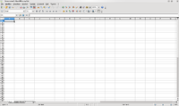

OpenOffice.org
|
OpenOffice.org
|
|
|
|
|
|
|
|
|
Desarrollador
|
|
|
Oracle Corporation en
asociación con la comunidad |
|
|
Información
general
|
|
|
Diseñador
|
StarDivision[1]
|
|
Lanzamiento
inicial
|
30 de abril de 2002 (info ) |
|
Última
versión estable
|
3.3 (info) |
|
Última
versión en pruebas
|
3.4.0 Beta 1 (info) |
|
Género
|
Suite
ofimática
|
|
Programado
en
|
C++,
Java[2]
|
|
Sistema
operativo
|
Multiplataforma
|
|
Licencia
|
LGPL
v3
|
|
Idiomas
|
110+ idiomas[3]
|
|
En
español
|
Sí
|
OpenOffice.org (frecuentemente escrito OOo para abreviar)
es una suite ofimática libre
(código
abierto y distribución gratuita) que incluye herramientas como procesador
de textos, hoja
de cálculo, presentaciones,
herramientas para el dibujo vectorial y base
de datos.[4] Está disponible para varias plataformas,
tales como Microsoft
Windows, GNU/Linux,
BSD,
Solaris
y Mac
OS X. Soporta numerosos formatos de archivo, incluyendo como
predeterminado el formato estándar ISO/IECOpenDocument (ODF), entre otros formatos comunes, así como también soporta más de 110
idiomas, desde febrero del año 2010.[3]
OpenOffice.org tiene como base inicial a StarOffice, una suite ofimática desarrollada por StarDivision y adquirida por Sun Microsystems en agosto de 1999.[5] El desarrollo de la suite está liderado por Oracle
Corporation (inicialmente por Sun Microsystems), en colaboración con otras compañías como Novell,
RedHat, RedFlag CH2000, IBM,
Google,
entre otras hasta octubre de 2010.[1] El código fuente de la aplicación está disponible bajo la Licencia
pública general limitada de GNU (LGPL) versión 3.[6]
El proyecto y el programa son denominados «OpenOffice»
de forma informal, aunque «OpenOffice.org» es el nombre oficial completo, ya
que la denominación openoffice es una marca
registrada en posesión de otra empresa.[7][8]
Historia
|
Lanzamientos mayores de OpenOffice.org
|
|
|
Versión
|
Fecha de lanzamiento
|
|
1.0
|
1
de mayo de 2002[9]
|
|
1.1
|
1
de octubre de 2003[10]
|
|
2.0
|
20
de octubre de 2005[11]
|
|
2.1
|
12
de diciembre de 2006[12]
|
|
2.2
|
29
de marzo de 2007[13]
|
|
2.3
|
17
de septiembre de 2007[14]
|
|
2.4
|
27
de marzo de 2008[15]
|
|
3.0
|
13
de octubre de 2008[16]
|
|
3.1
|
7
de mayo de 2009[17]
|
|
3.2
|
11
de febrero de 2010[18]
|
|
3.3
|
25
de enero de 2011[19]
|
La historia de OpenOffice.org se remonta a 1994,
año en que comenzó el desarrollo de la suite ofimática propietaria
StarOffice, creada por la compañía alemana StarDivision; que fue fundada diez años antes en la ciudad
de Luneburgo por Marco Börries.
Tiempo después, en agosto de 1999,
StarDivision fue adquirida por Sun
Microsystems por un monto de 73,5 millones de dólares.[20] La primera versión de StarOffice lanzada por Sun fue la 5.2, que estuvo disponible de forma gratuita en junio
de 2000.[1]
El 19
de julio de 2000, Sun Microsystems anunció que
dejaba disponible el código fuente de StarOffice para
descarga bajo tanto la Licencia
pública general limitada de GNU (LGPL) como la Sun Industry Standards
Source License (SISSL) con la intención de construir una comunidad de desarrollo de código
abierto alrededor de este programa. El nuevo proyecto fue bautizado como
OpenOffice.org, y el 13
de octubre de 2000 su código
fuente estuvo disponible por primera vez para descarga pública.[21]
El trabajo en la versión 2.0 comenzó a principios de 2003 con los
siguientes objetivos: mejorar la interoperatibilidad
con Microsoft Office; mejor rendimiento, con una mejora en la velocidad y un
menor uso de memoria; mayores funcionalidades de scripting;
mejor integración, en particular con GNOME;
una interfaz con facilidades de búsqueda y uso de base de datos para crear
informes, formularios y consultas; una nueva base de datos SQL
integrada; una usabilidad
mejorada.
El 2 de septiembre de 2005, Sun anunció el
cambio del tipo de licencia libre, abandonando la SISSL.[22]
A consecuencia de ello, el Consejo de la Comunidad de OpenOffice.org Community anunció que no continuaría la licencia dual en la
suite ofimática, y que las versiones futuras sólo usarían la LGPL.[23]
El 20 de octubre de 2005, OpenOffice.org 2.0 fue lanzado de forma
oficial.[24] Sin embargo, ocho semanas después de dicho lanzamiento, se presentó la
actualización OpenOffice.org 2.0.1, que corrige errores menores e introduce
nuevas características.
Desde 2005, OpenOffice.org cambió su ciclo de lanzamientos de 18 meses a
la presentación de actualizaciones, mejoras de características y correcciones
de bugs cada tres meses.[25]
En 2008 fue anunciado el comienzo del proyecto «Renaissance»,
que busca crear una nueva interfaz
gráfica de usuario para la suite.[26]
El primer objetivo del proyecto es comenzar el cambio de interfaz con Impress, cuya primera versión es incluida en OOo 3.3.[27]
Características
Formatos soportados
OpenOffice.org permite importar y exportar documentos en diferentes formatos
de archivo. El formato predeterminado para la escritura de documentos es
el estándar ISOOpenDocument.
Además es capaz de leer y grabar los formatos
de fichero de Microsoft Office. La suite tiene la capacidad de guardar
documentos en otros formatos, tales como el formato RTF,
TXT,
Microsoft
Office XML y OpenOffice.org
XML. Adicionalmente puede exportar
documentos directamente al formato PDF
y exportar presentaciones al formato Adobe
Flash (SWF).
OpenOffice.org también cuenta con la capacidad de importar documentos en modo
de «sólo lectura» en los formatos Unified
Office Format, Data Interchange
Format y los formatos propios de Microsoft
Works, WordPerfect,
Lotus
1-2-3, entre otros.[28]
Plataformas
OpenOffice.org está disponible para varios sistemas operativos,
incluyendo Windows,
Linux,
Mac
OS, BSD,
OpenVMS, OS/2,
IRIX,
Solaris
y OpenSolaris. A su vez puede ejecutarse en diversas arquitecturas,
tales como x86,
x86-64,
SPARC,
PowerPC, IA64,
entre otras.[29]
Diccionarios ortográficos

OpenOffice.org
Writer en Ubuntu.
Mediante un asistente o piloto, es posible descargar diccionarios
adicionales para muchos idiomas, incluido el español. Esta tarea puede
realizarse, también, manualmente de manera sencilla. Se cuenta con diccionarios
de palabras para corrección ortográfica, de separación silábica y de sinónimos.
Desde marzo de 2006 se utiliza el programa Hunspell. El programa MySpell era el corrector ortográfico hasta la
versión 2.0.2.
Extensiones
Desde la versión 2.0.4 de Openoffice.org es sencillo añadir extensiones
para agregar otras funcionalidades adicionales.[30] La mayoría de ellas se encuentran disponibles desde el repositorio de
extensiones oficial.[31] Desde la versión 2.3 el programa cuenta con una opción en Writer
que exporta los textos en formato wiki,
lo que permite publicarlos en proyectos como Wikipedia.[32] Desde la versión 3.2 de la suite está opción fue convertida en una extensión,
siendo opcional su descarga.[33]
Seguridad
A 9 de septiembre de 2009, el sitio de seguridad Secunia.com informa que
hay 0 defectos de seguridad por solucionar.[34]
Aplicaciones incluidas
Las aplicaciones incluidas en la suite
ofimática OpenOffice.org son las siguientes:
Writer

OpenOffice.org
Writer en KDE.
OpenOffice.org Writer es el procesador
de textos de la suite ofimática. Writer permite
exportar archivos de texto a los formatos PDF
y HTML
sin software adicional, lo que permite que pueda ser utilizado como un editor WYSIWYG
para crear y editar páginas
web.[35]
Calc


OpenOffice.org Calc en KDE.
OpenOffice.org Calc es una hoja
de cálculo similar a Microsoft
Excel o Lotus
1-2-3. Calc ofrece una serie de
características no presentes en Excel, incluyendo un sistema que,
automáticamente define serie de gráficas, sobre la base de la disposición de la
información del usuario. Calc también puede exportar
hojas de cálculo para el formato PDF.
Impress

OpenOffice.org
Impress en KDE.
OpenOffice.org Impress es un programa de presentación similar a Microsoft
PowerPoint o Keynote de Apple.
Puede exportar presentaciones al formato SWF,
permitiendo que se reproduzca en cualquier computadora con un reproductor de
Flash instalado. También incluye la capacidad de crear archivos PDF, y la
capacidad de leer archivos de Microsoft PowerPoint (ppt).
Su formato original es ODP.
Base

OpenOffice.org Base en KDE.
OpenOffice.org Base es un programa de base
de datos similar a Microsoft
Access. OpenOffice.org Base permite la creación y manejo de bases de
datos, elaboración de formularios e informes que proporcionan a los usuarios
finales un acceso fácil a los datos. Al igual que Microsoft
Access, es capaz de trabajar como un front-end para diversos sistemas de bases de
datos tales como el de Access (JET), fuente de datos ODBC
y MySQL/PostgreSQL. Base está disponible desde la
versión 2.0.
Draw

OpenOffice.org
Draw en KDE.
OpenOffice.org Draw es un editor
de gráficos vectoriales y herramienta de diagramación, similar a Microsoft
Visio y comparable en características a las primeras versiones de CorelDRAW. Ofrece «conectores» entre las formas, que
están disponibles en una gama de estilos de línea y facilitan la construcción
de los dibujos, como diagramas de flujo. Tiene características similares a la
edición de software de escritorio como Scribus y Microsoft
Publisher. Draw también puede exportar sus
creaciones al formato PDF y al estándar SVG.
Math

OpenOffice.org
Math en KDE.
OpenOffice.org Math es una aplicación diseñada para la creación y edición
de fórmulas matemáticas. La aplicación utiliza un lenguaje
de marcado para crear las fórmulas.[36] Dichas fórmulas pueden ser incorporadas dentro de otros documentos de
OpenOffice.org, tales como los creados por Writer; permitiendo al usuario la posibilidad de incrustarlas
al documento como objetos OLE.[37]
Math soporta múltiples fuentes y puede exportar
fórmulas a los formatos de archivo ODF, PDF o MathML.[38]
Cuota de mercado
OpenOffice.org y StarOffice aseguran tener el
14% del mercado de las grandes empresas en 2004.[39] El sitio web informa de que ha habido más de 100 millones de descargas.[40]
OpenOffice.org ha sido adoptado por una gran cantidad de instituciones en
el sector
público y privado.[41] Algunas de las razones de su adopción son el racionamiento en el gasto de
licencias de software y el uso que hace la suite de formatos de fichero
estándares e independientes de un único proveedor. Entre los usuarios de
OpenOffice.org se encuentran el Ministerio de Defensa de Singapur,
el Ayuntamiento de Bristol,
el Ayuntamiento de Zaragoza,[42] el Ayuntamiento de Castellón de la Plana o la Gendarmería
Francesa.[43][44][45]
El 4 de octubre de 2005, Sun y Google anunciaron una alianza estratégica mediante la cual Sun agregaría una barra de búsqueda de Google en OpenOffice.org, Sun y Google colaborarían en actividades de marketing así
como en investigación y desarrollo comunes, y Google ayudaría a distribuir
OpenOffice.org.[46]
En México,
OpenOffice.org se incluye en la computadora YooBook.[47]
OpenOffice.org suele aparecer preinstalado en gran cantidad de distribuciones
Linux.
Críticas
La gran mayoría de las
características que se criticaban han sido corregidas en la versión 3. Algunas
de las carencias que se criticaban en las versiones antiguas 2.x eran la falta
de plantillas incorporadas y asistentes automatizados (hay muchas plantillas
que pueden descargarse desde Internet, aunque aún son relativamente pocas las
que están traducidas al español); capacidad limitada para personalizar las
gráficas (sin embargo fue la principal preocupación de la versión 2.4 la cual
mejoró este problema) y falta de un solucionador de cálculos multivariados en Calc.
Rapidez de arranque de versiones
antiguas
Algunos usuarios experimentaban
lentitud en el arranque cuando se lanza por primera vez OpenOffice.org en
versiones previas a la 3.0. Esto puede mejorarse notablemente, si se desea
continuar utilizando versiones antiguas, cambiando la configuración de manejo
de memoria de OpenOffice.org.[48]
Estos cambios permiten a OpenOffice arrancar mucho
más rápidamente, a costa de aumentar el consumo de memoria. Otra posibilidad es
usar el programa de arranque rápido, una aplicación que se ejecuta al arrancar
el S.O., y que carga parte del software necesario para OpenOffice.
Esto ralentiza el arranque del ordenador, pero hace el arranque de OpenOffice mucho más rápido.
Sobre patentes
El jefe de licencias de Microsoft
dijo durante una entrevista realizada por la revista
Fortune en 2007 que su empresa se ve
perjudicada por programas
libres que estarían violando 235 patentes de su propiedad. OpenOffice.org estaría violando 35 del total.[49] En cualquier caso, Microsoft no ha informado cuáles son esas patentes, a pesar
de que puede disponer del código fuente de OpenOffice.org para inspeccionarlo.
Esta acción se interpretó por parte de muchas personas como FUD
de Microsoft con el fin de desalentar el uso de OpenOffice.org y el software
libre.[50] Un punto a considerar es que muchos países no permiten otorgar patentes a los programas
informáticos, por lo que en ellos, de realizarse esta denuncia, no tendría
relevancia.
Aplicaciones derivadas de OpenOffice.org

OOo4Kids,
una suite ofimática derivada de OOo y dirigida al
público infantil.
Existen varias suites
ofimáticas derivadas
de OpenOffice.org.[51] La mayoría de ellas están desarrolladas bajo licencia SISSL (que es válida
hasta OpenOffice.org 2.0 beta). En general, su objetivo es el mercado local,
con añadidos propietarios como un módulo de reconocimiento del habla, conexión
a base
de datos automática, o mejor soporte CJK.
Uno de estos derivados es la suite de oficina propietaria
Lotus
Symphony.[52] Otra aplicación derivada es NeoOffice para Mac. La versión de OpenOffice 3 para Mac está totalmente integrada en ese
entorno.
StarOffice
Sun Microsystems ayuda al
desarrollo de OpenOffice.org y lo utiliza como base para el desarrollo de su
propia versión comercial denominada StarOffice. Las
versiones de StarOffice desde la 6.0 han estado
basadas en el código fuente de OpenOffice.org.[1]
La diferencia entre ambas suites radica en que StarOffice
incluye algunos componentes propietarios
adicionales, tales como fuentes
adicionales (en especial las fuentes de idiomas
asiáticos); plantillas de documento adicionales; filtros de archivos adicionales y herramientas de
migración (Enterprise Edition).
Go-OO
Go-OO es una bifurcación
de OOo que desarrolla un conjunto de parches que
corrigen errores y añaden funcionalidades a la suite ofimática. OpenOffice y las correcciones realizadas por el proyecto Go-OO vienen incluidas en varias distribuciones
Linux, entre ellas Debian, Mandriva, openSUSE, Gentoo y Ubuntu.[53]
LibreOffice
Después de la adquisición de Sun Microsystems (patrocinador del desarrollo de
OpenOffice.org) por parte de Oracle, StarOffice y StarSuite recibieron el nuevo nombre de Oracle Open Office.
El 28 de septiembre de 2010, miembros
de la comunidad de desarrollo del proyecto OpenOffice.org formaron un nuevo
grupo llamado The Document Foundation,
poniendo a disposición una bifurcación
de OpenOffice.org llamada LibreOffice. La fundación
declaró que coordinará y vigilará el desarrollo de LibreOffice.
Oracle fue invitada a convertirse en miembro de The Document Foundation y se pidió
que donara la marca OpenOffice.org al proyecto.[54]
The Document Foundation recibió apoyo de la comunidad de desarrolladores
independientes de Open Office, y también de las empresas Novell,
RedHat, Canonical
y Google.
El objetivo es producir una suite ofimática independiente de cualquier empresa,
con soporte ODF y sin la obligación de asignar la autoría del código a Oracle. Oracle Open
Office impone que la autoría del código se asigne a Oracle (anteriormente la
obligación era a Sun).